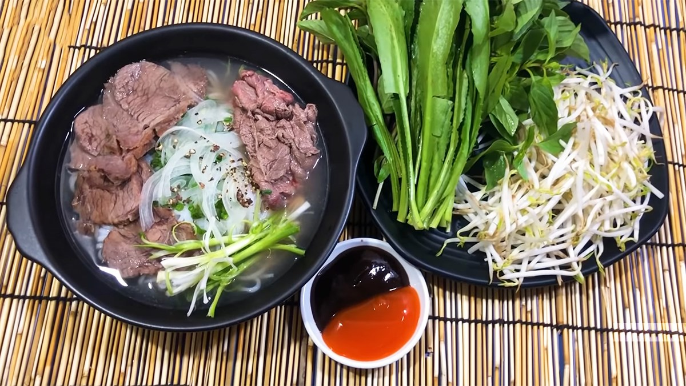

Phở Bò

Description
Không phải ngẫu nhiên phở bò lại được các đầu bếp hàng đầu thế giới bình chọn là món ăn nên thử ít nhất 1 lần trong đời. Đằng sau mỗi tô phở ấy là một hương vị đặc trưng khó mà lẫn lộn.
Ingredients
- Xương ống bò 2 kg
- Thịt thăn bò 1 kg
- Thịt nạm bò 1 kg
- Hành tây 3 củ
- Hành lá 5 cây
- Gừng 1 củ
- Hành tím 6 củ
- Bánh phở 1 ít
- Rau ăn phở 1 ít
- Đường phèn 200 gr
- Gia vị nấu phở 1 gói
- Gia vị thông dụng 1 ít
Steps
- Sơ chế và chần thịt
- Sơ chế nguyên liệu khác
- Nấu nước dùng
- Thành phẩm